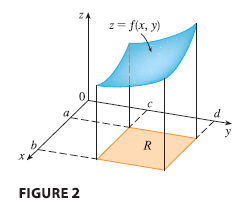
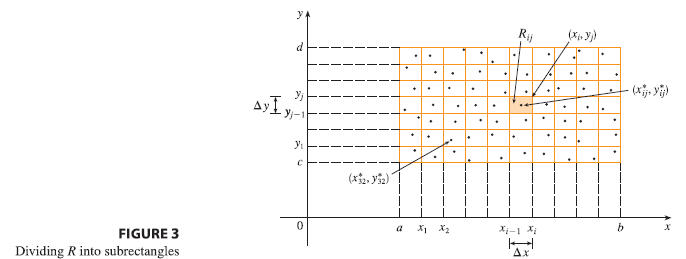
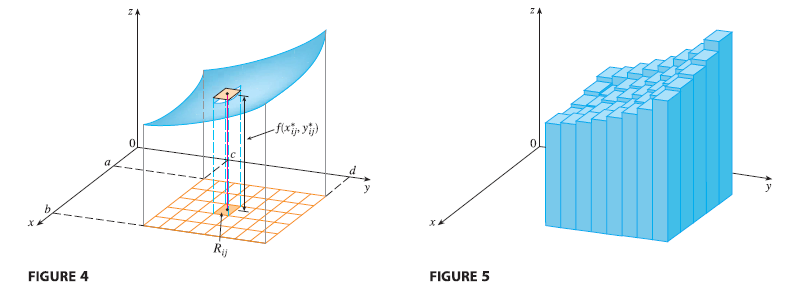

We consider a function \(f\) of two variables defined on a closed rectangle \[ R = [a, b] \times [c, d] = \{(x, y) \in \mathbb{R}^2 | a \le x \le b, c \le y \le d\} \] and we first suppose that \(f(x, y) \ge 0\). The graph of \(f\) is a surface with equation \(z = f(x, y)\).

Let \(S\) be the solid that lies above \(R\) and under the graph of \(f\), that is, \[ S = \{(x, y, z) \in \mathbb{R}^3 | 0 \le z \le f(x, y), (x, y) \in R\} \] (See Figure 2.) Our goal is to find the volume of \(S\).
The first step is to divide the rectangle \(R\) into subrectangles. We accomplish this by dividing the interval \([a, b]\) into \(m\) subintervals \([x_{i-1}, x_i]\) of equal width \(\Delta x = (b - a)/m\) and dividing \([c, d]\) into \(n\) subintervals \([y_{j-1}, y_j]\) of equal width \(\Delta y = (d - c)/n\). By drawing lines parallel to the coordinate axes through the endpoints of these subintervals, as in Figure 3, we form the subrectangles

\[ R_{ij} = [x_{i-1}, x_i] \times [y_{j-1}, y_j] = \{(x, y) | x_{i-1} \le x \le x_i, y_{j-1} \le y \le y_j\} \] each with area \(\Delta A = \Delta x \Delta y\).
If we choose a sample point \((x_{ij}^*, y_{ij}^*)\) in each \(R_{ij}\), then we can approximate the part of \(S\) that lies above each \(R_{ij}\) by a thin rectangular box (or “column”) with base \(R_{ij}\) and height \(f(x_{ij}^*, y_{ij}^*)\) as shown in Figure 4. The volume of this box is the height of the box times the area of the base rectangle: \[ f(x_{ij}^*, y_{ij}^*) \Delta A \]

If we follow this procedure for all the rectangles and add the volumes of the corresponding boxes, we get an approximation to the total volume of \(S\):
\[ \tag{3} V \approx \sum_{i=1}^{m} \sum_{j=1}^{n} f(x_{ij}^*, y_{ij}^*) \Delta A \]
(See Figure 5.) This double sum means that for each subrectangle we evaluate \(f\) at the chosen point and multiply by the area of the subrectangle, and then we add the results.
Our intuition tells us that the approximation given in (Eq 3) becomes better as \(m\) and \(n\) become larger and so we would expect that
\[ \tag{4} V = \lim_{m, n \to \infty} \sum_{i=1}^{m} \sum_{j=1}^{n} f(x_{ij}^*, y_{ij}^*) \Delta A \]
We use the expression in Equation (4) to define the volume of the solid \(S\) that lies under the graph of \(f\) and above the rectangle \(R\).
This dicussion leads to the following definition.
Definition The double integral of \(f\) over the rectangle \(R\) is \[ \tag{5} \iint_R f(x, y) dA = \lim_{m, n \to \infty} \sum_{i=1}^{m} \sum_{j=1}^{n} f(x_{ij}^*, y_{ij}^*) \Delta A \] if this limit exists.
The precise meaning of the limit in Definition 5 is that for every number \(\varepsilon > 0\) there is an integer \(N\) such that \[ \left| \iint_R f(x, y) dA - \sum_{i=1}^{m} \sum_{j=1}^{n} f(x_{ij}^*, y_{ij}^*) \Delta A \right| < \varepsilon \] for all integers \(m\) and \(n\) greater than \(N\) and for any choice of sample points \((x_{ij}^*, y_{ij}^*)\) in \(R_{ij}\).
A function \(f\) is called integrable if the limit in Definition exists.
The sample point \((x_{ij}^*, y_{ij}^*)\) can be chosen to be any point in the subrectangle \(R_{ij}\), but if we choose it to be the upper right-hand corner of \(R_{ij}\) [namely \((x_i, y_j)\), see Figure 3], then the expression for the double integral looks simpler:
\[ \tag{6} \iint_R f(x, y) dA = \lim_{m, n \to \infty} \sum_{i=1}^{m} \sum_{j=1}^{n} f(x_i, y_j) \Delta A \]
We see that a volume can be written as a double integral:
If \(f(x, y) \ge 0\), then the volume \(V\) of the solid that lies above the rectangle \(R\) and below the surface \(z = f(x, y)\) is \[ V = \iint_R f(x, y) dA \]
The sum in Definition 5, \[ \sum_{i=1}^{m} \sum_{j=1}^{n} f(x_{ij}^*, y_{ij}^*) \Delta A \] is called a double Riemann sum and is used as an approximation to the value of the double integral. If \(f\) happens to be a positive function, then the double Riemann sum represents the sum of volumes of columns, as in Figure 5, and is an approximation to the volume under the graph of \(f\).